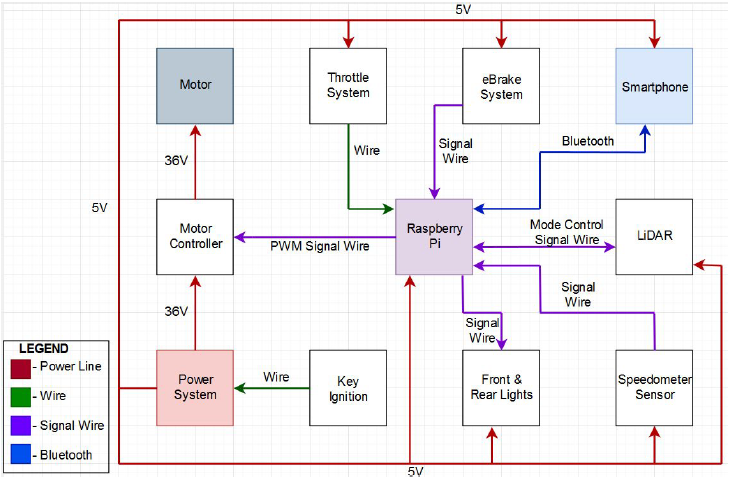

TF2 Sentry - Page Work in Progress
Description
For a fun project on my own to do, I decided it should be something that I can make using the STM series. I never got to learn it and figured it would be a good time, especially during the current lockdowns due to COVID-19. I decided to make the Engineer's sentry from Team Fortress 2. What I had in mind for it was to be able to scan infront of it using a motor and some sensors, then respond with a flash representing a muzzle flash and play sounds through some speakers. It would also communicate with a PDA I'd make as an Android App.
Software and Hardware
The Design

Functional Block Diagram

Below is a table of contents
- Page 1 - Description
- Page 2 - Power System
- Page 3 - Motor System
- Page 4 - Speedometer System
- Page 5 - eBraking System
- Page 6 - Object Detection System
- Page 7 - Turn Signal System
- chevron_left
- 1
- 2
- 3
- 4
- 5
- 6
- 7
- chevron_right